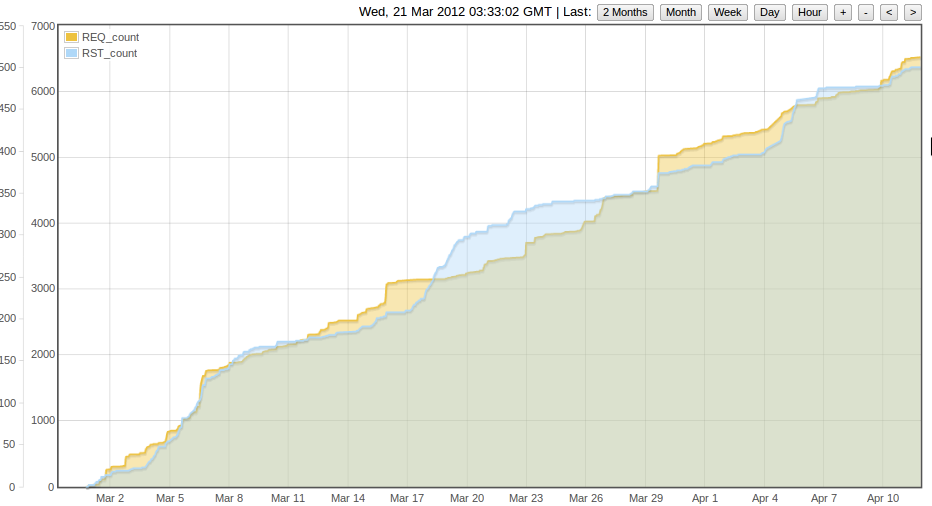

I've been posting data from my NanodeRF to emoncms for about a week now. Most of the time it seems to go great, but over the past couple of days the data update rate seemed to be slowing down. Finally found time to hook up to the PC and see the serial output this morning, and the data post was only succeeding once every 10 attempts. So I tried numerous things - added extra diagnostic output, changed to posting to a local server I have complete control over, added a few random delays - but nothing improved the situation. Nothing had changed, so what was going on? Internet and the site I was posting to was responsive, nothing looked wrong. However, the only thing I had not rebooted was my router. Doing so, the problem went away immediately. Data updates every 10 seconds. If my web browsing was slow, or I'd seen other issues, then I'd understand it, but everything else was fine.
I think one to look out for in the future and try and diagnose if it happens again.
(For the record, Netgear DG834GT running V1.03.22 - DGTeam Rev. 1018)
Lloyd
Re: Strange network issue
OK so this is definitely an issue for me. Have been doing a number of controlled experiments today including rebooting and changing power source on EmonBase, but the only thing that returned service to normal was rebooting the router. I have been capturing and graphing in emoncms the ethernet_request counter, and this clearly shows the system going into periods of unresponsiveness, in a very regular pattern. I had thought power could have been an issue, but I don;t think this is the case now - swapping over from usb to FTDI and the failure pattern continues.
I guess there is a chance that the change in my external ip has had an impact, but I don't think this is the case. If I do a manual data post from my PC whilst the emonbase is struggling, it responds with an OK immediately.
Not sure where to go next. I may try a wireshark capture if I can obtain a hub, but doubt that will be until Wednesday evening.
Lloyd
Re: Strange network issue
Have you got any stats from the router..
It sounds like its keeping open all the connections from the NanodeRF and not closing them.
Im using dd-wrt on my router and am showing 21 open connections from the base to CMS system its been running now for over a week and not showing any problems. Iv seem problems with home routers in the past with the number of connections they can keep open before they just grind to a halt so this sounds right. See if your router has an option to show "number of active connections" or something similar sorry im not up to date on your firmware and it looks like the dd-wrt does not work on yours.
This may all be a wild goose chase but i would look at the router.
Rob
Re: Strange network issue
I had terrible problems initially and even ordered a complete nanode kit...
Have replaced Virgin SuperHub with a Netgear WNDR3800 and the situation is MUCH improved....
But, the nanode regularly loses connectivity, resets and resets and then magically starts working again....
Re: Strange network issue
I thought I may have stumbled across something in the ethercard library. A change was made in December that the author was unsure of, so provided instructions on how to reverse it. Unfortunately, this actually made matters worse. So there's another theory down the drain.
What was interesting was the way the serial output differed when running the different versions of the library, which I didn't expect. Normally I see multiple lines returned for each post (as in attached image). With the modified library (ie with the suspect change reversed), I only see one line, the one with date/time on.
Can someone who uses a fairly standard emoncms post their serial output?
Thanks
Lloyd
Re: Strange network issue
Here is an interesting post form the jeelabs.net forum (Consecutive calls to ethercard.browseUrl corrupt previous calls?). May not be the issue here (who knows at the moment), but certainly worth being aware of.
Lloyd
Re: Strange network issue
You can stop emoncms sending full multi line theme html by adding .json to the api call:
http://vis.openenergymonitor.org/emoncms3/api/post.json?apikey=0489a48f8498db5798fdd66842785a95&json={power:252.4,temperature:15.4}
I will add that to the emoncms account page.
Interesting detective work on the routers, I have been logging the number of failed requests and watchdog resets that I get over the last month and a half. About 6500 failed requests where it managed to reconnect without a reset and 500 resets, a reset is forced if it fails to connect after 10 attempts so this could be another 5000 requests in 42 days = 11-22 failed requests an hour. I post once every 5 seconds so that's 12 out of 720 posts an hour that fail a 1.7% failure rate.

When i started logging request failures and resets I noticed that the steeper gradients related to times when I had more than the usual 2 nanodeRF's connected, I haven't been looking at it in detail recently, Id like to do more tests to confirm that.
Re: Strange network issue
Thanks for the info on the http call. I had noticed both options in use, and had wondered what the difference was. Will make a change tomorrow and see what impact that has.
Lloyd
Re: Strange network issue
A quick update as time is rather short tonight.
I've run with .json added to the api call today, and strangely, it is a lot less reliable. Not what I expected at all. The positive news is that I have a number of wireshark captures that occur at the precise moment of failure. The correlation is very high (one to one) between a failed transmit and wireshark complaining about the tcp packets. I don't have time now, but will analyse more over the next day or two and post my findings.
I'm now running without the .json, to try and capture some problems there. At the moment I'm not seeing the errors in the data that I was seeing with .json in the call, bit it may be a matter of time. (I reset my router when making the change so the test is fair).
Lloyd
Re: Strange network issue
Wow that's interesting, would be really good to know why that is happening, not what I expected either!
Re: Strange network issue
for interest, here is a graph that shows how marked the difference is. At the first indicated point on the graph I changed the call to include .json, and then removed it at the second. At each point I also rebooted the router. (To exaggerate the issue I display -1 if the value is zero.)
Lloyd
Re: Strange network issue
That is quite a difference, I will do some tests here to see if I can replicate the effects.
Re: Strange network issue
Here is some output form Wireshark. The top half of the page is a good request, the lower half a bad one. The issue would appear to be the data packet being sent (or at least received) out of sequence, which I believe is a fairly standard thing and so should be handled. Is the ethercard library not handling this out of sequence packet in the correct way? I'm not a TCP expert, so if anyone else would care to comment....
Lloyd
Re: Strange network issue
Packets arriving out of sequence is common and should be catered for in any tcpip stack...
My nanode is fairly stable - I have changed the timeout to 5 attempts..
I will use a packet sniffer when i get a mo - I was concentrating on changing the time from emoncms3 to the nanode, which is in GMT....
Re: Strange network issue
I think I'll post this on the jeelabs forums.
Lloyd